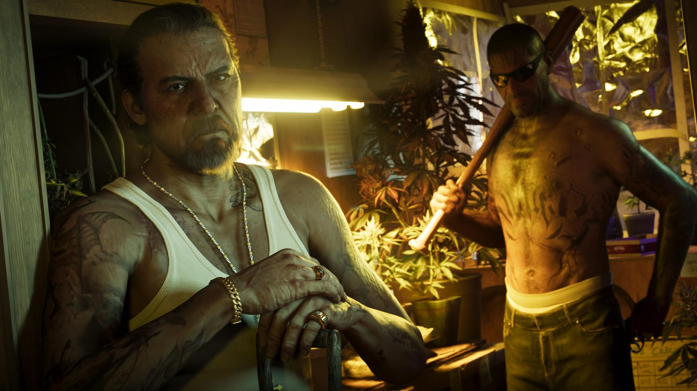
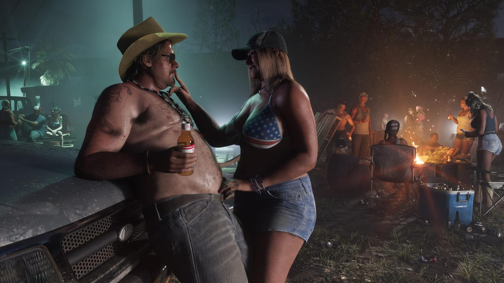
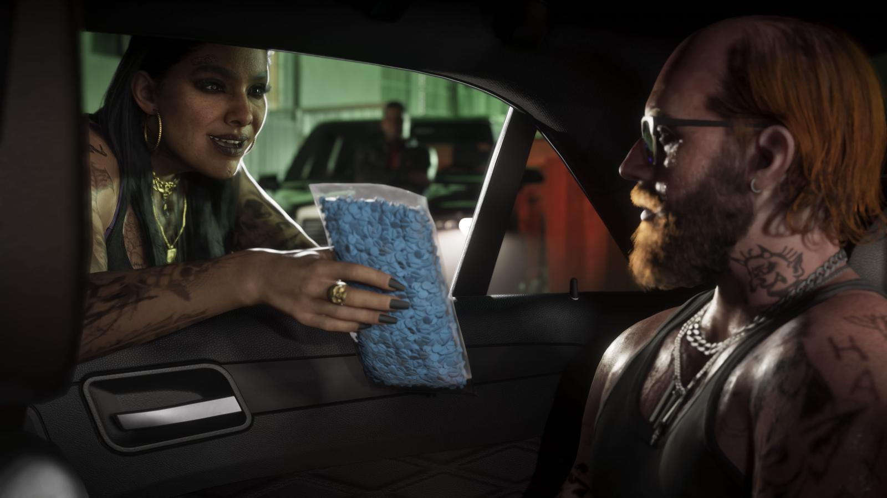

Port Gellhorn в GTA 6: забытое побережье Леониды
Обновлено:

- Port Gellhorn — бывший курортный городок на побережье Мексиканского залива.
- Rockstar описывает его экономику тремя словами: солодовое пиво, обезболивающие и энергетики с заправок.
- Прототип — побережье Флоридского выступа, которое в реальности называют «Забытым побережьем».
- На официальных кадрах видна пассажирская железная дорога.
Курорт, который никто не ждёт
В каждой GTA есть место, куда не зовут туристов. В GTA 5 это был Сэнди-Шорс у высохшего озера. В GTA 6 — Port Gellhorn: городок на западном побережье Леониды, где когда-то отдыхали семьи, а теперь закрыты аттракционы и мотели сдают номера на час.
Жара не спадает даже ночью. Во дворе у трейлера горит костёр, из переносного холодильника достают очередную бутылку, кто-то включил кантри на полную. Мужик в ковбойской шляпе опирается на капот, девушка в купальнике со звёздно-полосатым флагом смеётся над его шуткой. До Вайс-Сити несколько часов езды — и целая вечность.

Что говорит Rockstar
Официальное описание региона короткое и безжалостное. Rockstar называет Port Gellhorn «забытым побережьем Леониды»: дешёвые мотели, закрытые аттракционы и пустые торговые центры туристов уже не вернут — «но в этом когда-то популярном месте отдыха появилась новая экономика». И тут же расшифровывает, на чём она держится: солодовое пиво, обезболивающие и энергетики с придорожных заправок.
«Новая экономика» в GTA почти никогда не означает стартапы. Судя по кадрам, речь о том, что город живёт тем, что продаётся из-под полы.

Реальное «Забытое побережье»
Rockstar не называет реальных мест, но выражение «Забытое побережье» (Forgotten Coast) существует на самом деле. Так во Флориде называют малонаселённый отрезок побережья Мексиканского залива на Флоридском выступе — примерно от городка Мексико-Бич до Сент-Маркса. Его «забыли» застройщики: там нет небоскрёбов и тусовок Майами, зато есть устричные посёлки, рыбаки и пустые пляжи.
Фанаты чаще всего сравнивают Port Gellhorn с соседним Панама-Сити — курортом с мотелями и парками развлечений, который пережил и расцвет, и упадок. Это сравнение сообщества, а не официальная информация.
10 октября 2018 года в Мексико-Бич — начале реального «Забытого побережья» — вышел на сушу ураган «Майкл» пятой, высшей категории. Он почти стёр посёлок и сильно разрушил Панама-Сити. Многие мотели и аттракционы потом так и не открылись. Когда Rockstar пишет о «закрытых аттракционах», для жителей этого побережья это не художественный образ, а воспоминание.
Обезболивающие — не шутка
Слово «обезболивающие» в описании Rockstar — отсылка к одной из самых тёмных страниц Флориды. В 2000-х штат стал центром так называемых «таблеточных клиник» (pill mills): частных кабинетов, где рецепт на сильные опиоиды выписывали почти без осмотра. По данным американского Управления по борьбе с наркотиками (DEA), в 2010 году 98 из 100 врачей США, выписавших больше всего оксикодона, работали во Флориде.
GTA всегда высмеивала Америку через её реальные проблемы: в GTA 5 были фармкомпании, секты и «оздоровительные» гуру. В GTA 6 эту роль, похоже, берёт на себя Port Gellhorn.
Откуда название
Официально Rockstar название не объясняла. Популярная версия фанатов — отсылка к Марте Геллхорн, одной из самых известных военных корреспонденток XX века. Её связь с Флоридой вполне реальна: в 1936 году в баре Sloppy Joe’s в Ки-Уэсте она познакомилась с Эрнестом Хемингуэем и позже стала его третьей женой. Совпадение это или задумка Rockstar — неизвестно; считайте это нашей красивой догадкой вслед за сообществом.
Что там будет делать игрок
Точного списка активностей Rockstar не давала, поэтому честно — только то, что видно и сказано:
- Поезда. На официальных кадрах региона видна пассажирская железная дорога. Можно ли на ней ездить — пока не подтверждено.
- Криминальная «новая экономика». Сделки, таблетки, подпольные теплицы — судя по кадрам, для героев здесь найдётся работа. Как в целом устроен заработок — Как зарабатывать деньги в GTA 6.
- Побережье залива. Вода, пляжи и порт — а значит, лодки. Транспорт региона — Транспорт в GTA 6: что показала Rockstar.
Port Gellhorn — одна из шести частей Леониды. Остальные регионы — Карта GTA 6: штат Леонида и все регионы, главный город — Вайс-Сити в GTA 6: главный город Леониды. А узнаете ли вы Port Gellhorn по одному кадру? Проверьте в тесте Тест: угадай регион Леониды по кадру.
Источники: Rockstar Games (официальное описание региона); Dexerto и timesaver.gg (что подтверждено и что — догадки сообщества); NOAA / National Hurricane Center (ураган «Майкл», 2018); DEA (статистика по оксикодону, 2010); Visit Florida (Forgotten Coast); биография Марты Геллхорн.